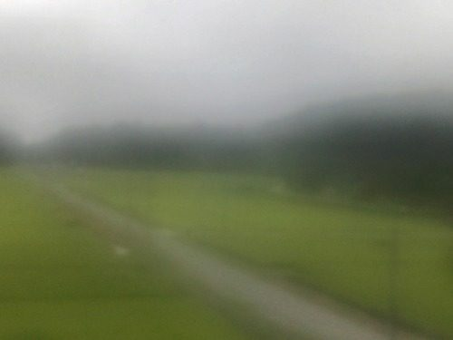
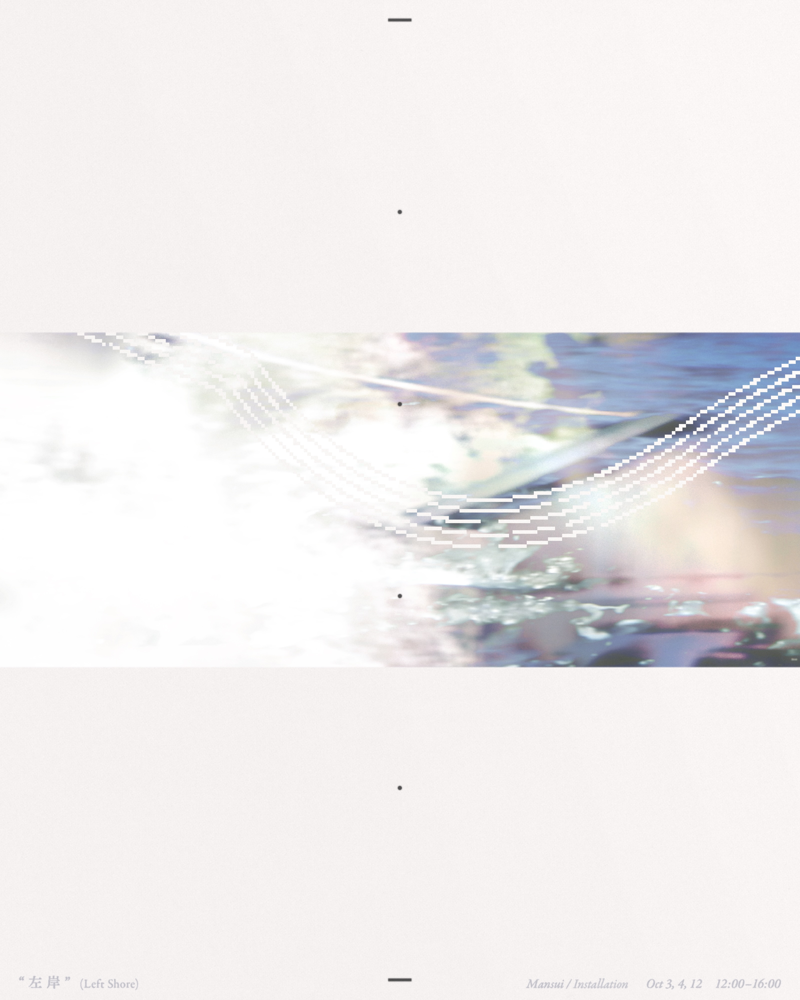
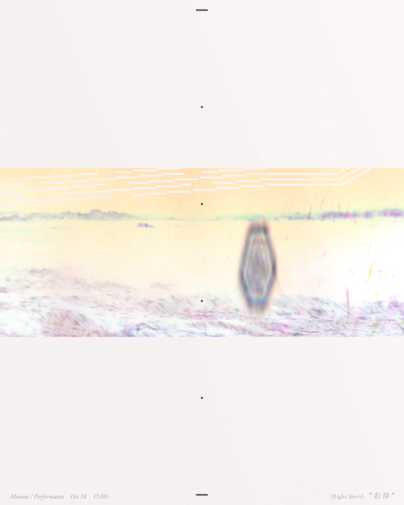

Ryotaro Ishihara
about
works
releases
schedule
texts

schedule
2026.10.3 / 10.4 / 10.12
左岸

音響的居住空間を徳冨蘆花の住んだ平屋へ数日かけ設営する進行型インスタレーション 10/3 満粋, 石原遼太郎 10/4 満粋, 田中託未 10/12 満粋, 雪路 蘆花記念公園第一休憩所 各回12:00〜16:00 協力：逗子アートフェスティバル フライヤーデザイン：柳澤駿
逗子アートフェスティバル 作品ページ
2026.10.18 (Sun) 17:00〜
右岸

海につづくトンネルで行う朗読、音楽、芝居によるパフォーマンス 浪子不動尊付近トンネル 神奈川県逗子市新宿５丁目５−５ 浪子不動園地あたり 出演：石原遼太郎, 田中託未, 雪路 協力：逗子アートフェスティバル フライヤーデザイン：柳澤駿
逗子アートフェスティバル 作品ページ